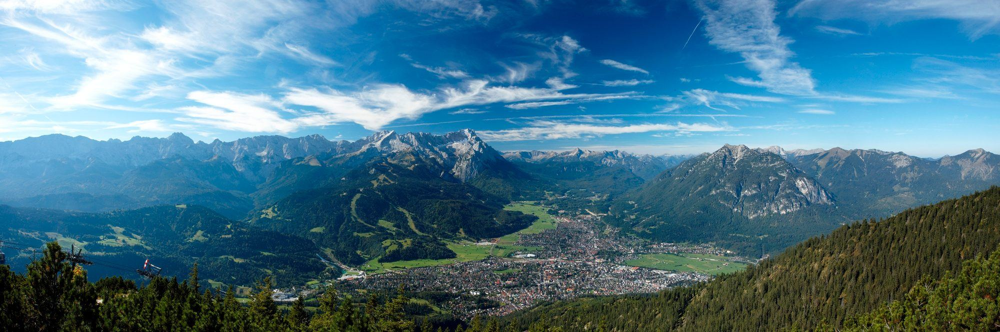
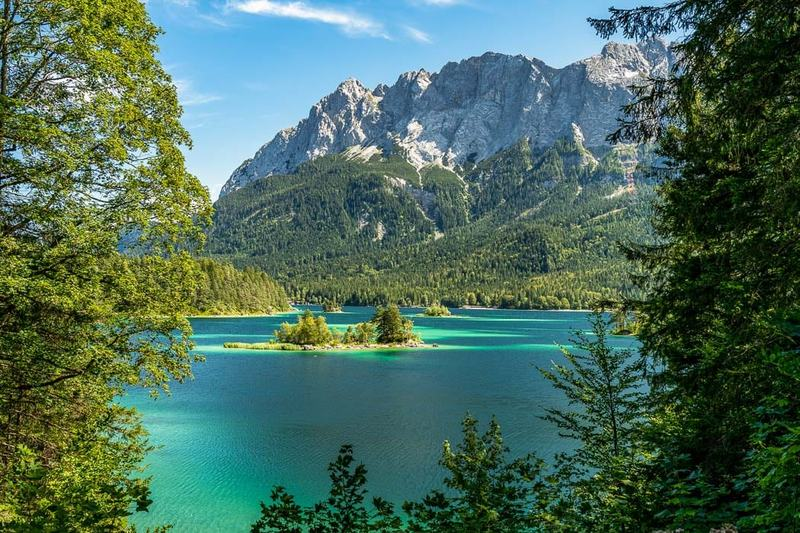
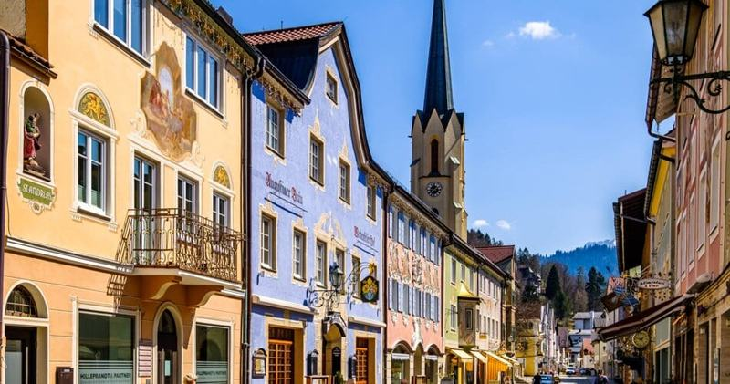
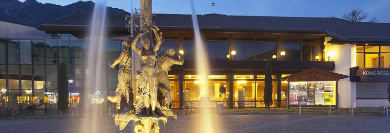
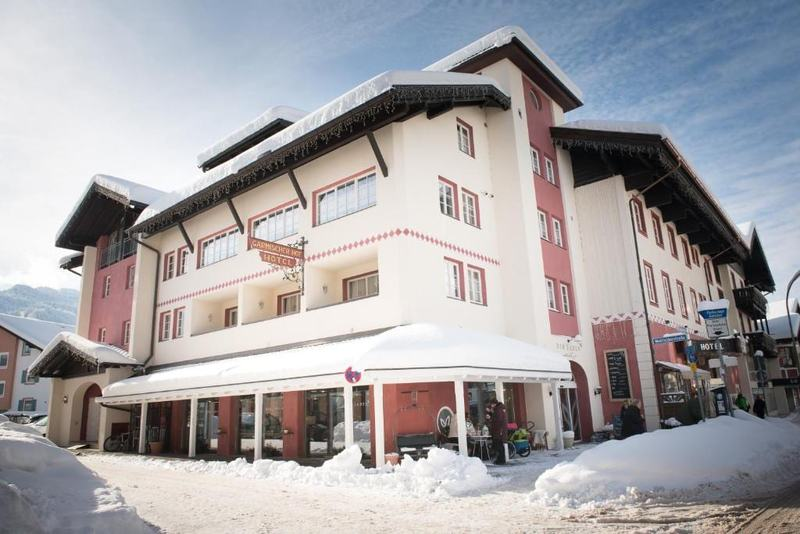

Garmisch-Partenkirchen
One of Germany’s most iconic mountain destinations, beneath the Zugspitze — Germany’s highest peak.
Bavarian charm, alpine scenery
Garmisch-Partenkirchen, tucked into the foothills of the Bavarian Alps, is one of Germany’s most iconic mountain destinations. Known for its beautiful alpine scenery, it lies beneath the towering Zugspitze, Germany’s highest peak, which offers sweeping views and year-round adventure. The town blends Bavarian charm with breathtaking nature: lush valleys, sparkling streams, and rugged cliffs invite visitors to hike, ski, and explore in every season.
Garmisch-Partenkirchen itself retains a warm and traditional feel, with painted timber houses, vibrant local culture, and cozy alpine cafés lining its streets. Whether you crave high-altitude thrills or a peaceful escape amid majestic mountains, this alpine gem brings together natural splendor and authentic Bavarian character.


Easy to reach
Compared to other alpine regions, Garmisch-Partenkirchen is easy to reach.
By air
Munich Airport (MUC) is about 120 km north of Garmisch-Partenkirchen, a major international hub with direct connections to destinations across Europe, North America, and Asia. Innsbruck Airport (INN) in Austria is another option, just 60 km away, with seasonal flights from several European cities.
By train
Garmisch-Partenkirchen is well connected by regional and long-distance trains. Frequent direct services from Munich take roughly 1 hour and 20 minutes. International travelers can easily reach Munich by ICE and continue onward without difficulty.
By car
The A95 motorway from Munich leads almost directly into town (around 1 hour 10 minutes). Innsbruck is about 1 hour away (1 hour 30 minutes via the scenic Fern Pass), and northern Italy is within a 2.5-hour drive via the Brenner highway.
Where we meet and stay

Kongresshaus Garmisch-Partenkirchen
A modern congress and event venue located in the heart of Garmisch-Partenkirchen. The AFS takes place here from Sunday, August 23 to Tuesday, August 25, 2026.
Richard-Strauss-Platz 1, 82467 Garmisch-Partenkirchen

Hotel Garmischer Hof
Accommodation for all conference participants is reserved from Saturday, August 22 to Wednesday, August 26 for a reduced rate of 169 EUR per night. All participants are expected to attend for the entire duration of the conference.
A centrally located, family-run hotel in the pedestrian zone, just a short walk (about 600 m) from the train station. It blends traditional Bavarian charm with modern comfort and a strong focus on sustainability.
Chamonixstraße 10, 82467 Garmisch-Partenkirchen